华与华 华与华 2020年8月13日 21:00
与华可以揭秘的近期新作，让大家先睹为快。本期为你分享的是湖南妇女儿童医院超级符号。2020年6月15日，长沙面积最大的妇儿专科医院——湖南妇女儿童医院正式开诊。华与华为妇儿医院创作的超级符号草莓人也盛大亮相。华与华为湖南妇女儿童医院创意的超级符号，选用草莓为原型，并对其进行私有化创作，设计出了一大一小的草莓母子形象。湖南妇女儿童医院，志在打造一家有温度的医院。可爱、暖心的草莓人深受医护人员和患者的喜欢，湖南妇女儿童医院也被大家亲切地称为“草莓医院”。#华与华新作#湖南妇女儿童医院超级符号
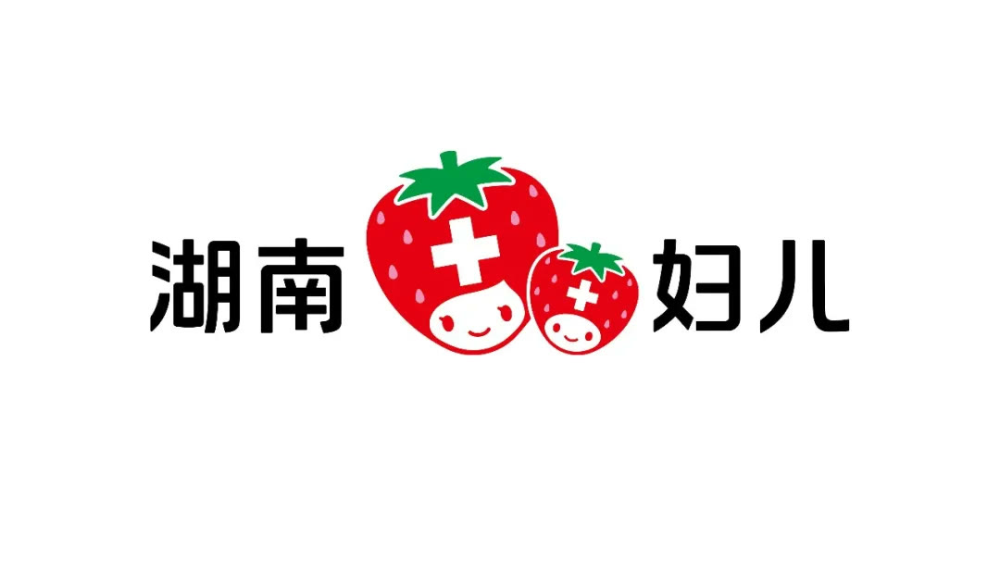

▲湖南妇女儿童医院超级符号
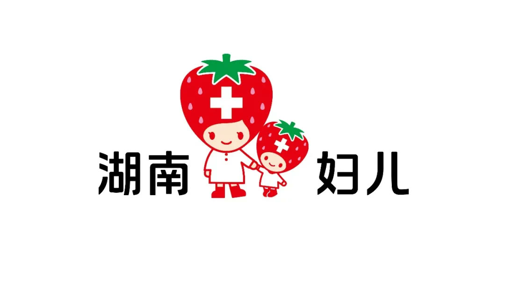
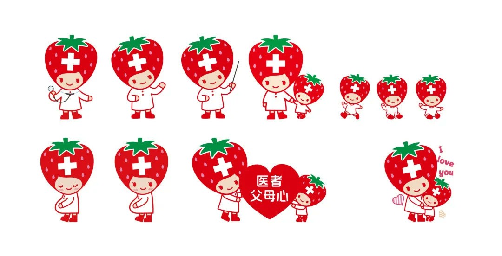
▲湖南妇女儿童医院 IP 形象及延展应用

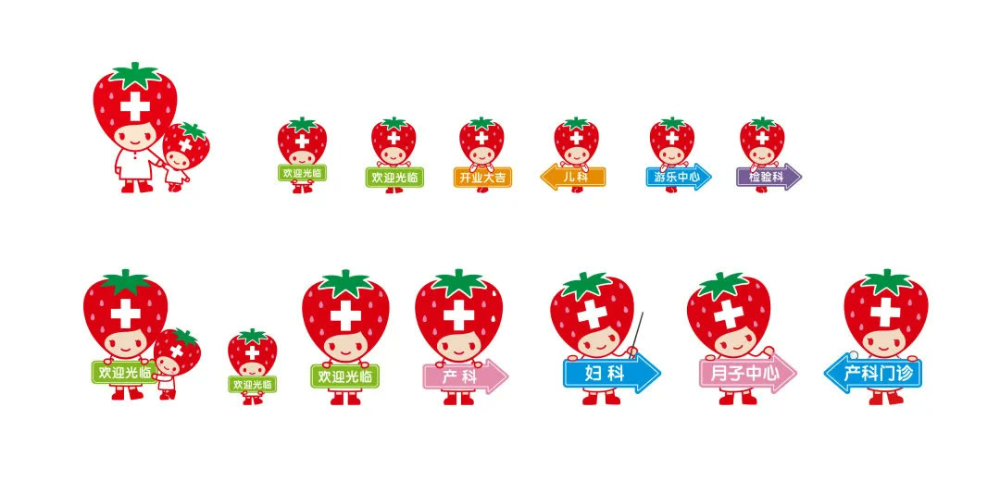
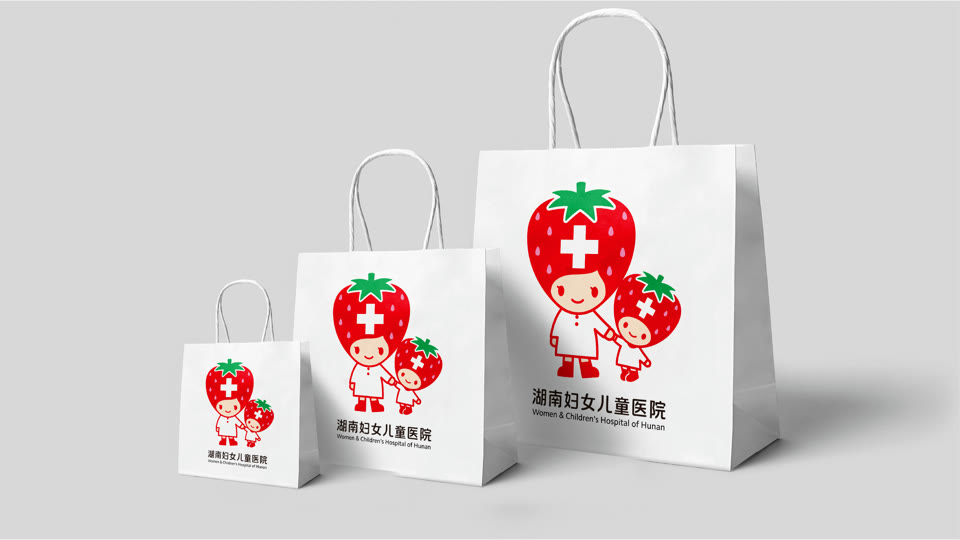
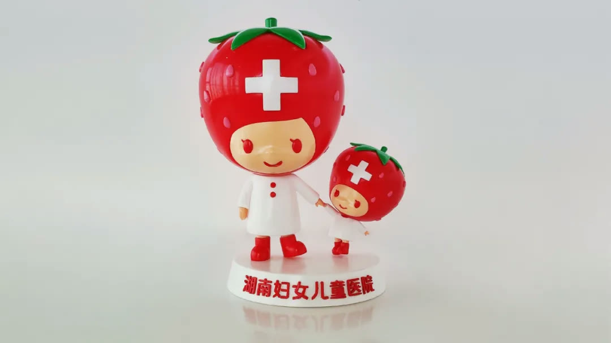
▲湖南妇女儿童医院 IP 形象 3D 造型

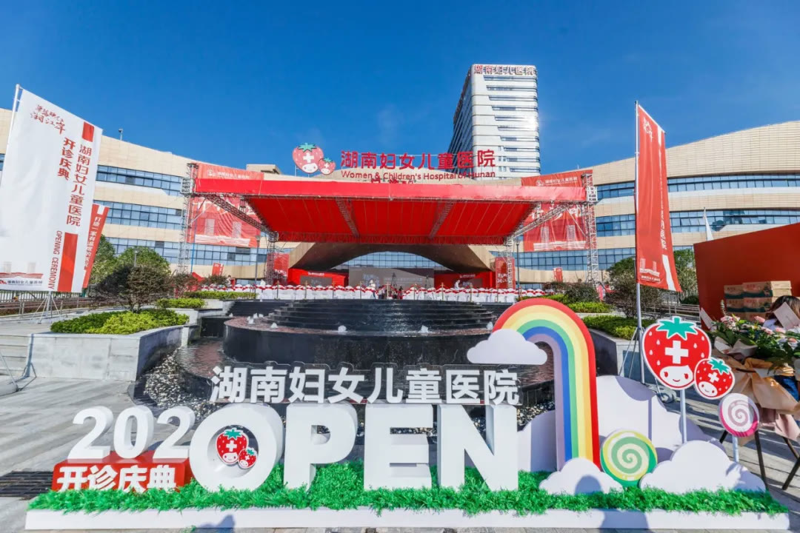
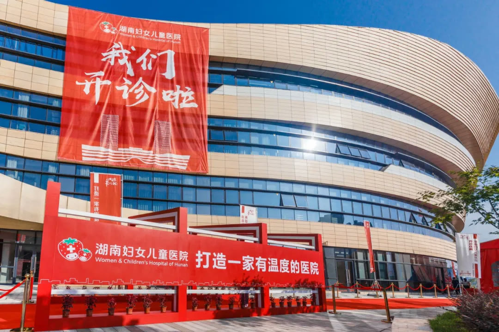

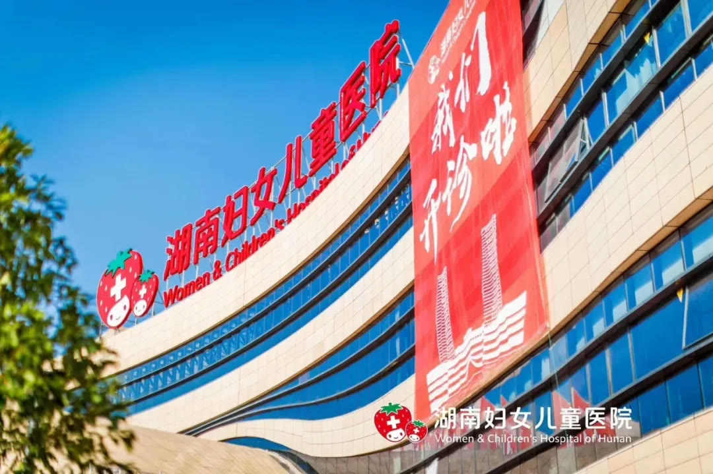
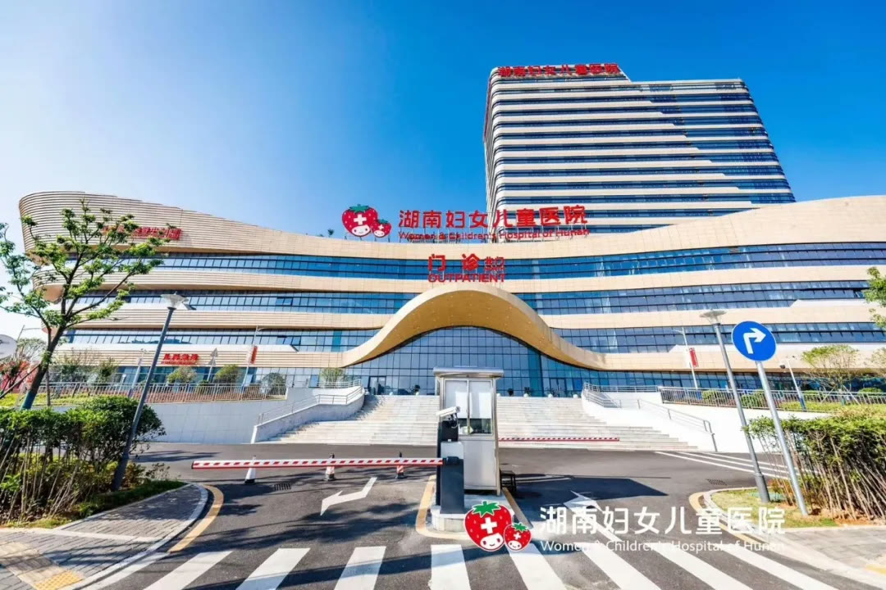
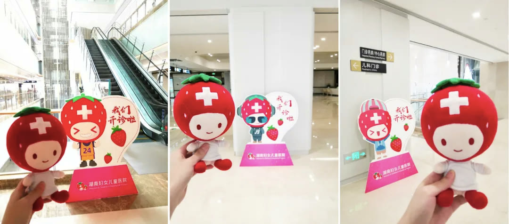

▲湖南妇女儿童医院超级符号在医院的落地应用
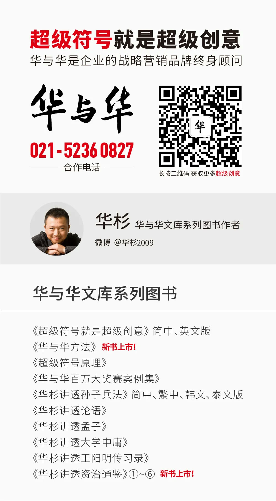